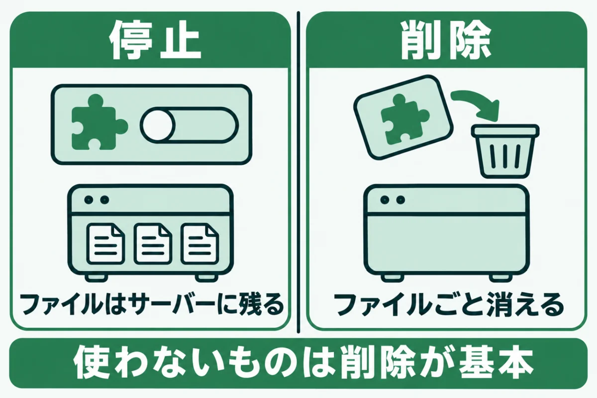
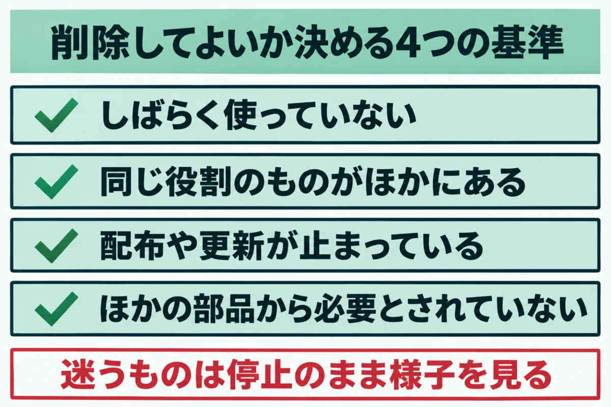
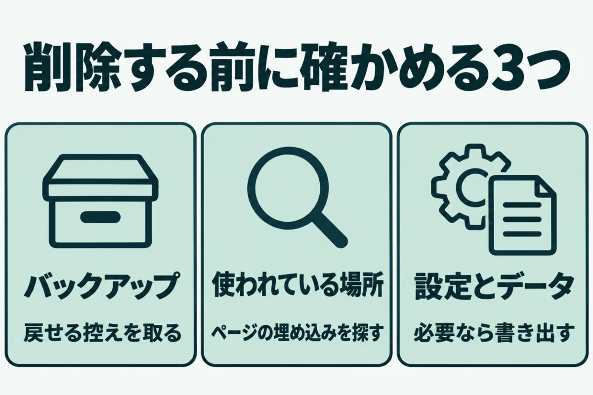
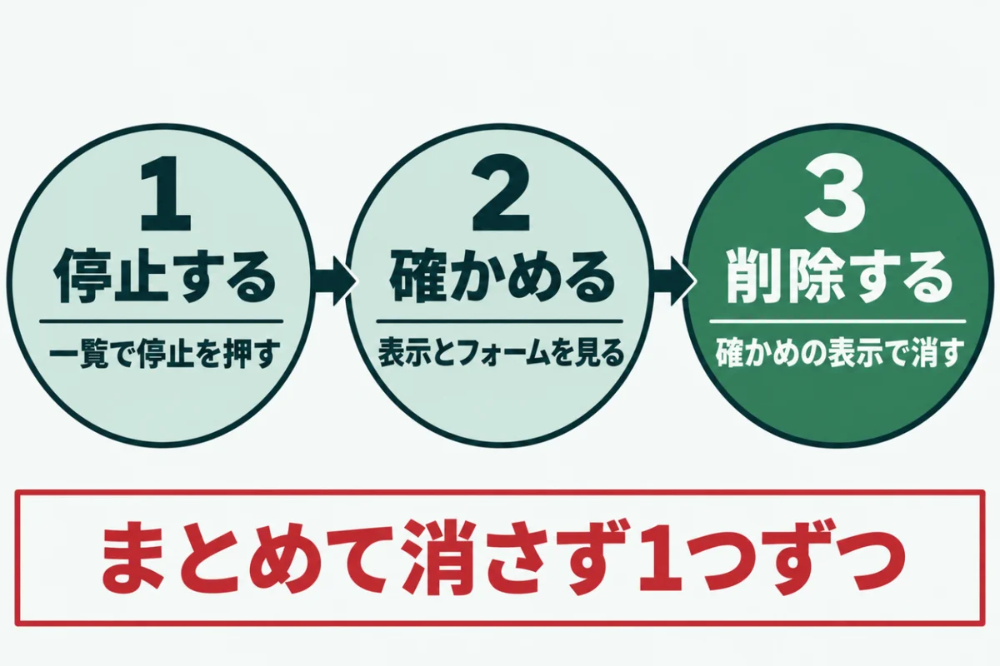
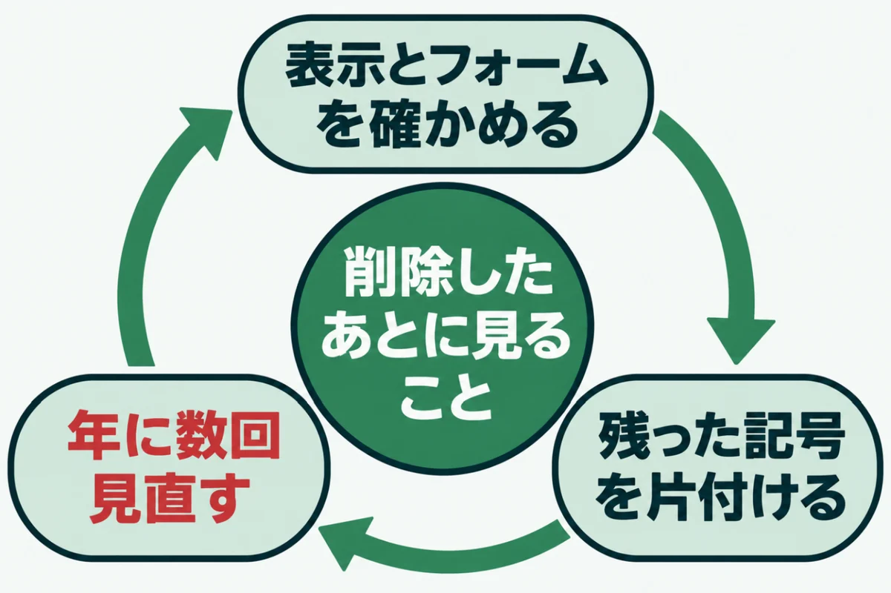

WordPressの使っていないプラグインは削除すべき？判断の基準と安全な消し方

「使っていないプラグインは止めてあるけれど、消したほうがいいの？消したらサイトが壊れない？」と迷っていませんか？
WordPressの管理画面には、昔入れたまま止まっているプラグインが並びがちです。止めてあるだけで安心してしまい、何年もそのままになっていることもあります。
この記事では、使っていないプラグインを削除してよいかの判断基準と、安全な消し方をまとめました。停止と削除の違いから、消したあとに見る点まで順に紹介します。
運営者が自社サイトを点検したときに見つけた例も入れました。作業の前に一度通して読んでおけば、迷わずに進められるでしょう。
WordPressの使っていないプラグインは削除すべきか

結論から言うと、この先も使う予定のないプラグインは削除するのが基本です。WordPressの公式の手引きも、使っていないプラグインは消すよう案内しています。
止めただけでは、プラグインのファイルはサーバーに残ったままになるでしょう。使わない部品は、置いておくほど手入れの手間が増えるのです。まずは、停止と削除で何が違うのかを押さえておきましょう。
停止と削除の違い
プラグインの「停止」は、働きを止めるスイッチを切る操作です。ファイルや設定はそのまま残り、「有効化」を押せばすぐに元へ戻せます。
一方の「削除」は、プラグインのファイルをサーバーから消す操作です。WordPressの仕組みでは、停止しているプラグインだけが削除できるようになっています。使っているものをいきなり消せない作りなので、まず停止し、次に削除という2段階で進めてください。どちらの操作も、管理画面の「プラグイン」の一覧から行えるでしょう。
停止していてもファイルは残る
停止したプラグインは、画面の上では何もしていないように見えます。しかし、ファイルはサーバーの決まった場所に置かれたままです。
ファイルの中には、URLを指定すれば外から直接呼び出せるものもあります。作りによっては、停止中でも弱点をねらわれるおそれがあるのです。止めたプラグインは更新の通知を見落としやすく、古い版のまま残りがちな点も困ります。使わないと決めたものは、ファイルごと消しておくほうが安心でしょう。
公式の手引きも削除をすすめている
WordPressの公式の守りの手引きには、使っていないプラグインは消すように書かれています。あわせて、プラグインを常に最新に保つことも求めているのです。
見つかる弱点の多くは、本体ではなくプラグインにあります。Patchstackの報告では、2025年に見つかった弱点の91%がプラグインでした。数が多いほど、こうした弱点に当たる機会も増えます。入れているプラグインを必要なものだけに絞ることは、手軽で効き目のある守りです。
- 参考：Plugins screen｜WordPress.org Documentation
- 参考：Hardening WordPress｜Developer.WordPress.org
- 参考：State of WordPress Security in 2026｜Patchstack
WordPressのプラグインを削除してよいか決める4つの基準

消してよいかは、使い道と状態の両方から決めます。迷ったときは、次の4つの基準に当てはめてみてください。
1つでも強く当てはまれば、削除の候補として考えてよいでしょう。「なんとなく残している」ものから順に見直すのがおすすめです。判断に迷うものは、すぐに消さずに停止したまま様子を見る方法もあります。基準を決めておくと、次の点検のときも迷わずに済むのです。
① しばらく使っていない
最初に見るのは、そのプラグインを最近使ったかどうかです。キャンペーンのために入れたものや、試しに入れたものは、役目を終えていることが多くあります。
停止したまま数か月たっているなら、なくても困らない証拠でしょう。止めてから何も困っていないものは、削除の第一候補です。いつ止めたか分からないときは、サイトの担当者や制作会社に聞いてみてください。使い道が誰にも分からないものも、同じく見直しの対象になります。
② 同じ役割のものがほかにある
次に、同じ役割のプラグインが2つ以上入っていないかを見ます。乗り換えたあと、古いほうを止めたまま残している例はよく見かけるのです。
バックアップやキャッシュ、サイトマップを作る機能は、重なりやすいので注意しましょう。役割が重なるものは、使っているほうだけを残すと管理が楽になります。両方を有効にしていると、動きがぶつかって不具合のもとになることもあるのです。今の役割を担っているほうを確かめてから、もう一方を外してください。
③ 配布や更新が止まっている
3つ目は、配布や更新が続いているかどうかです。公式のプラグインのページに赤い表示が出ていれば、配布が止まった印になります。
閉鎖の理由には、弱点が見つかったことも含まれるのです。最新の3つの版で試されていないという黄色い表示も、手入れが止まった目安になるでしょう。運営者の自社サイトにも、2022年に配布が止まったサイトマップのプラグインが残っていました。使っているなら、同じ働きの別のものへ置き換えることを考えてください。
④ ほかの部品から必要とされていない
最後に、ほかのプラグインやテーマから必要とされていないかを確かめます。追加の機能が、土台となるプラグインを前提に作られている場合があるからです。
WordPress 6.5からは、必要とされるプラグインの停止と削除のリンクが押せなくなりました。一覧に「必要とされている」と出ていれば、それを使う側を先に片付けます。押せないリンクは、ほかの部品が使っている合図なのです。テーマが前提にしているものは一覧に出ないため、テーマの説明書も見ておきましょう。
- 参考：Alerts and Warnings｜Plugin Handbook
- 参考：Introducing Plugin Dependencies in WordPress 6.5｜Make WordPress Core
WordPressのプラグインを削除する前に確かめること

削除は、ファイルを消すので元に戻すには入れ直しが要ります。消す前に、次の3つを確かめておきましょう。
どれも数分でできる作業です。確かめてから消せば、表示の崩れに慌てずに済むでしょう。特に、長く運営しているサイトほど、思わぬ場所で古い機能が使われていることがあります。作業の日時と消したプラグインの名前も、メモに残しておいてください。
バックアップを取っておく
最初に、サイト全体のバックアップを取ります。サーバーの自動バックアップがあれば、戻せる日付を確かめておくだけでも構いません。
プラグインの中には、消すときに自分の設定や表をデータベースから消すものがあります。入れ直しても、消えた設定までは戻らないことがあるのです。フォームの受信の記録や、細かく作り込んだ設定を持つものは特に注意してください。作業の直前の控えがあれば、万一のときも元の状態へすぐに戻せます。
使われている場所を探す
次に、そのプラグインがページのどこかで使われていないかを探します。ショートコードやブロック、ウィジェットとして埋め込まれていることがあるからです。
止めた時点で、埋め込んだ場所に記号のような文字が出ることがあります。停止したあとに主なページを開いて確かめると見つけやすいでしょう。お問い合わせフォームや表、スライダーなどは、見た目で気づきやすい部分です。テーマのファイルに直接書き込まれた呼び出しは、制作会社に確かめてもらってください。
設定やデータの扱いを確かめる
最後に、削除したときに設定やデータがどうなるかを確かめます。消すときにデータまで片付けるかどうかは、プラグインの作りしだいです。
WordPressの開発者向けの手引きでも、データを消す処理は各プラグインが用意するとしています。あとで使うデータは、消す前に書き出しておくと安心です。問い合わせの記録などは、書き出しの機能があれば先に保存しておきましょう。設定画面に「削除時にデータも消す」といった項目がある場合は、その選び方も見ておくとよいでしょう。
WordPressのプラグインを削除する手順

削除の作業は、管理画面の「プラグイン」の一覧から行います。停止、確認、削除の順で進めれば、途中で異変に気づけるのです。
複数を消すときも、1つずつ停止と確認をくり返すのが安全でしょう。まとめて消すと、不具合が出たときにどれが原因か分からなくなります。管理画面に入れないときのやり方も、あわせて紹介しましょう。作業はアクセスの少ない時間帯に行うと、訪問者への影響を抑えられるでしょう。
プラグインを停止する
管理画面の「プラグイン」を開き、消したいプラグインの「停止」を押します。一覧の上の絞り込みで「停止中」を選ぶと、止まっているものだけが出るので便利です。
すでに停止しているプラグインは、この手順を飛ばして構いません。WordPressは、最近停止したものを「最近停止した」の欄に7日間表示します。止めた日を覚えておくと、不具合の原因を追いやすいのです。止めたら、すぐに次の確認へ進みましょう。作業の前後で一覧の画面を控えておくと、さらに安心できます。
表示と動きを確かめる
停止したら、トップページと主なページを開いて表示を確かめます。お問い合わせフォームがあれば、テストの送信もしておくと安心です。
表示が崩れたり、エラーが出たりしたら、いったん「有効化」で元に戻してください。問題がなければ、数日そのまま様子を見てもよいでしょう。すぐに消さず、停止のまま1週間ほど置くと、見落としていた使い道にも気づけます。管理画面の操作や保存も、ふだんどおりにできるかを試しておきましょう。
削除を押して確認の表示で消す
停止中のプラグインの下にある「削除」を押すと、本当に消すかを確かめる表示が出ます。プラグインの名前に間違いがないかを見てから、先へ進んでください。
確かめの表示で「OK」を選ぶと、ファイルの削除が始まるのです。この確かめの表示が、取り消せる最後の場面になります。消したあとは一覧から外れたことを確かめ、表示ももう一度見ておきましょう。消したプラグインの名前と日付は、作業の記録に残しておくと後で役立つはずです。
管理画面に入れないときの消し方
プラグインのせいで管理画面に入れないときは、サーバーの側から止めます。FTPやサーバーのファイル管理の画面で、プラグインのフォルダの名前を変える方法です。
フォルダの場所は、WordPressの中の「wp-content/plugins」になります。名前を変えれば、そのプラグインは停止の扱いになるのです。入れるようになったら、名前を戻して管理画面から改めて停止と削除をしましょう。サーバーのファイルを直接さわる作業なので、先にバックアップを取ってください。
WordPressのプラグインを削除したあとに見ること

プラグインを削除したら、それで終わりではありません。消したあとのサイトの状態を見て、残ったものを片付けます。
同じことをくり返さないための習慣も大切です。消したあとの確認と、増やさない工夫をセットにすると、サイトを身軽に保てます。定期的に見直す日を決めておくと、気づいたときには数十個に増えていた、ということを防げるでしょう。
表示とフォームをもう一度確かめる
削除したあとも、主なページとフォームの動きを確かめます。停止のときに問題がなくても、削除で設定が消えて変わることがあるからです。
スマホの表示や、検索、会員のページなども、使っているなら開いてみてください。確かめたページと結果を、作業の記録に残すと安心できます。あとで不具合に気づいたとき、いつの作業が原因かを振り返りやすくなるのです。問題が見つかったら、バックアップから戻すか、プラグインを入れ直してください。
残った記号や設定を片付ける
プラグインを消しても、ページに埋め込んだショートコードは文字として残ります。記事やウィジェットに見覚えのない記号が出ていたら、消しておきましょう。
データベースに設定が残る作りのプラグインもあります。残った設定は、ふつうは表示に影響しないので、慌てて消す必要はありません。どうしても片付けたいときは、データベースを直接さわる前に、必ずバックアップを取ってください。不安があれば、制作会社や詳しい人に頼むほうが安全です。
入れる数を増やさない習慣をつける
新しいプラグインを入れる前に、本当に必要か、ほかの方法で済まないかを考えます。試すときは、試したあとに消すところまでを1つの作業にしましょう。
運営者が自社サイトを点検したときも、PHP 8で止まる2020年の版のプラグインが見つかりました。年に数回は、入っているプラグインを一覧で見直すのがおすすめです。更新が続いているかもあわせて確かめれば、古い部品の見落としを防げます。更新の進め方は次の記事で紹介しました。
WordPressを何年も更新していないときの安全な更新手順｜一気に上げずに段階的に
URLを入れるだけで、危ない追加機能や古いプログラムなど8項目を無料で判定します。登録はいりません。
無料で診断するWordPressのプラグインの削除に関するよくある質問
停止しているだけのプラグインでも、危険はありますか？
停止していても、ファイルはサーバーに残っています。作りによっては、外から直接ファイルを呼び出されるおそれがあるのです。止めた日から更新も届かなくなります。
使う予定がなければ、削除しておくほうが安心でしょう。弱点が見つかったときの対処は、次の記事で詳しく紹介しています。
WordPressのプラグインに脆弱性が見つかったときの対処法
削除したプラグインは、元に戻せますか？
公式の配布ページにあるものなら、もう一度入れ直せます。ただし、消すときに設定まで消えるプラグインでは、設定は戻りません。
有料のプラグインは、入れ直しにライセンスの情報が要ることもあるのです。戻せる状態にしておきたいときは、削除の前にバックアップを取っておいてください。控えがあれば、設定ごと元の状態へ戻せます。
いくつまでならプラグインを入れても大丈夫ですか？
安全な数が決まっているわけではありません。数よりも、1つずつの手入れが行き届いているかが大切です。
更新が続いているものを、必要な分だけ入れるようにしましょう。数が多いほど、更新や確かめの手間は増えていくものです。入れる前に、本当に要るかを一度考えてみてください。使わないものを減らしておけば、毎回の点検もずっと楽になるでしょう。
プラグインを削除すると、サイトが軽くなりますか？
停止中のプラグインは、ふつうはページの表示の処理に加わりません。そのため、消しても表示の速さが大きく変わらないことが多いのです。
削除のねらいは、速さよりも、弱点のもとと手入れの手間を減らすことにあります。表示が重いときは、有効になっているものの見直しを先に考えてください。速さを測る道具で、前後を比べておくと判断しやすくなります。
どれを消してよいか自分で判断できないときは？
まずは、使い道が分からないものを停止して、数日様子を見る方法があります。困ることがなければ、削除の候補にしてよいでしょう。
制作会社に任せたサイトなら、一覧を送ってどれが必要かを聞くのが確実です。外から古いプラグインが見えていないかを、点検で確かめてもらうのもよい方法になります。点検の結果は、次に何を消すかを決める材料にもなるのです。
まとめ
使っていないWordPressのプラグインは、止めておくだけでなく削除するのが基本です。停止ではファイルが残り、古い版のまま弱点のもとになりかねません。
消す前に、バックアップと、使われている場所の確認を済ませることが大切です。停止、確認、削除の順に1つずつ進め、消したあとも表示とフォームを見てください。
年に数回は入っているプラグインを見直し、必要なものだけを最新の版で使いましょう。
まずは、今の状態を知るところから。
URLを入れるだけで、数十秒で判定が出ます。登録はいりません。